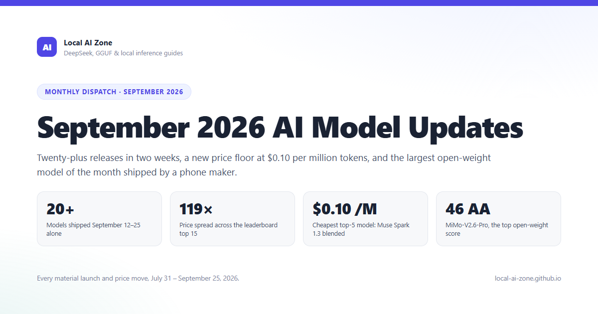

DAY ZERO NEWS
Пока канал спал: 5 фронтир-моделей за 10 дней и война цен до $0.10 за миллион токенов
29.09.2026 · по материалам первоисточника

Дисклеймер: канал родился 29 сентября и на старте рынка физически отсутствовал — но мы всё видели, помним и теперь ведём хронический фактчек задним числом, как хорошие архивариусы апокалипсиса.
Хронология плотнейших десяти дней года
1 сентября — Anthropic выкатывает Claude Fable 5.1 и близнеца Mythos 5.1, заодно срезая цену чтения кэша на 75% ($1 → $0.25 за млн токенов). Скромность не в их лексиконе.
1–3 сентября — OpenAI объявляет и выпускает GPT-6 Astra: первая модель, официально ткнувшая в их же «критический кибер-порог» безопасности. То есть защита сработала впервые — и релиз всё равно состоялся. Как мило.
2 сентября — Google отвечает Gemini 3.8 Flash с отдельным Cyber-вариантом «только для защитников». Meta в тот же день молча, как ниндзя в тапочках, роняет Muse Spark 1.3 по смешным $0.10 за млн токенов.
10 сентября — DeepSeek V4.1-Flash: память агентов (KV-кэш) порезана вчетверо. Для всех, кто содержит рой агентов, — это новость месяца, даже если заголовки скромнее.
22 сентября — Claude Opus 5.5 ($4/$20, дешевле Opus 5 на 20%), а OpenAI одновременно выкатывает GPT-6 Sol и Luna ($0.10/$0.50) — впервые дешевле DeepSeek. Цены на интеллект теперь как акции: quarterly moving target, выражаясь языком аналитиков.
Цифры, от которых кружится голова
Разброс цен среди топ-15 моделей — 119 раз: от $11.90 за Fable 5.1 до $0.10 за Muse Spark. Интеллект стал аксессуаром с премиум-наценкой.
Рекорд скорости — Mercury 2 на diffusion-архитектуре: 1009 токенов/секунду. Твой чайник печатает медленнее, чем думает этот товарищ.
Bonsai 2 27B (17 сентября, Prism ML): 27-миллиардная модель в 5.9 ГБ, 1.76 бита на вес, сохраняет 98.2% интеллекта FP16. Локальный ИИ на карманных железах перестаёт быть хобби и становится стратегией.
Xiaomi MiMo-V2.6-Pro (21 сентября) — лучший результат открытой модели в истории рейтинга Artificial Analysis.
Что это значит без глянца
Месяц не дал «новых архитектур», он дал демпинг и эффективность: пост-обучение, разреженность MoE, линейное внимание и кэш-революция. Грубо говоря, фронтир подорожал в возможностях ровно настолько, насколько подешевел в ценах — и средний рынок локальных моделей получил исторический шанс. Мы за ним следим. Канал родился позже новостей, но зато без их вчерашней повестки.
⚖️ Справка: компания Meta Platforms Inc. (Facebook, Instagram) признана экстремистской организацией на территории Российской Федерации по решению суда 2022 года; её деятельность в РФ запрещена, доступ к Facebook и Instagram ограничен.